In each section, I will show pieces of code for you to follow along. All the code used in the tutorial is available in this GitHub Repository.
Introduction to Documentation
HTTP Explanation
What is HTTP?
HTTP is the protocol for websites. The internet uses it to interact and communicate with computers and servers. Let me give you an example of how you use it everyday.
When you type the name of a website in the address bar of your browser and you hit enter. What happens is that an HTTP request has been sent to a server.
For example, when I go to my address bar and type google.com, then hit enter, an HTTP request is sent to a Google Server. The Google Server receives the request and needs to figure how to interpret that request. The Google Server sends back an HTTP response that contains the information that my web browser receives. Then it displays what you asked for on a page in the browser.
How is Flask involved?
We will write code that will take care of the server side processing. Our code will receive requests. It will figure out what those requests are dealing with and what they are asking. It will also figure out what response to send to the user. To do all this we will use Flask.
Introduction to Flask
What is Flask?
It makes the process of designing a web application simpler. Flask lets us focus on what the users are requesting and what sort of response to give back.
Learn more about micro frameworks.
How Does a Flask App Work?
The code lets us run a basic web application that we can serve, as if it were a website.
from flask import Flask
app = Flask(__name__)
@app.route("/")
def home():
return "Hello, World!"
if __name__ == "__main__":
app.run(debug=True)
This piece of code is stored in our main.py.
Line 1: Here we are importing the Flask module and creating a Flask web server from the Flask module.
Line 3: Line 3: __name__ means this current file. In this case, it will be main.py. This current file will represent my web application.
We are creating an instance of the Flask class and calling it app. Here we are creating a new web application.
Line 5: It represents the default page. For example, if I go to a website such as “google.com/” with nothing after the slash. Then this will be the default page of Google.
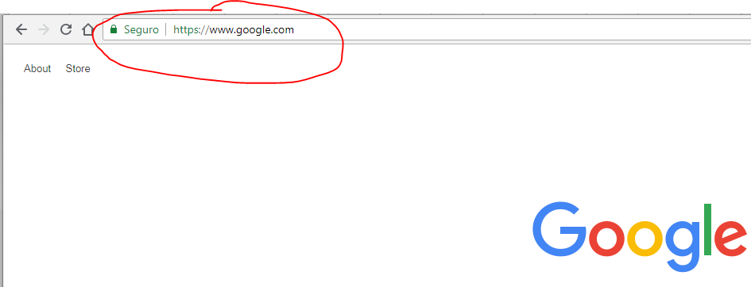Line 6-7: When the user goes to my website and they go to the default page (nothing after the slash), then the function below will get activated.
Line 9: When you run your Python script, Python assigns the name “__main__” to the script when executed.
If we import another script, the if statement will prevent other scripts from running. When we run main.py, it will change its name to __main__ and only then will that if statement activate.
Line 10: This will run the application. Having debug=True allows possible Python errors to appear on the web page. This will help us trace the errors.
Let’s Try Running main.py
In your Terminal or Command Prompt go to the folder that contains your main.py. Then do py main.py or python main.py. In your terminal or command prompt you should see this output.
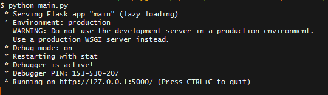The important part is where it says Running on http://127.0.0.1:5000/.
127.0.0.1 means this local computer. If you do not know the meaning of this (like I didn’t when I started — this article is really helpful), the main idea is that 127.0.0.1 and localhost refer to this local computer.
Go to that address and you should see the following:
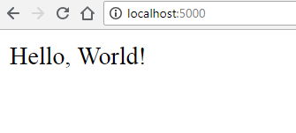More Fun with Flask
Earlier you saw what happened when we ran main.py with one route which was app.route(“/”).
Let’s add more routes so you can see the difference.
from flask import Flask
app = Flask(__name__)
@app.route("/")
def home():
return "Hello, World!"
def salvador():
return "Hello, Salvador"
if __name__ == "__main__":
app.run(debug=True)
In Line 9-11: we added a new route, this time to /salvador. Now run the main.py again and go to http://localhost:5000/salvador.
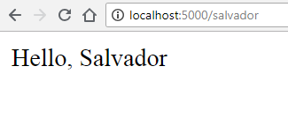So far we have been returning text. Let’s make our website look nicer by adding HTML and CSS.
HTML and CSS with Flask
HTML and Templates in Flask
First create a new HTML file. I called mine home.html. Here is some code to get you started.
<!DOCTYPE html>
<html lang="en" dir="ltr">
<head>
<meta charset="utf-8">
<title>Flask Tutorial</title>
</head>
<body>
<h1>My First Try Using Flask</h1>
<p>Flask is Fun<p>
</body>
</html>
The Flask Framework looks for HTML files in a folder called templates. You need to create a templates folder and put all your HTML files in there.
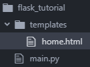Now we need to change our main.py so that we can view the HTML file we created.
from flask import Flask, render_template
app = Flask(__name__)
@app.route("/")
def home():
return render_template("home.html")
@app.route("/salvador")
def salvador():
return "Hello, Salvador"
if __name__ == "__main__":
app.run(debug=True)
Line 1: We imported render_template() method from the flask framework. render_template() looks for a template (HTML file) in the templates folder. Then it will render the template for which you ask. Learn more about render_templates() function.
Line 7: We change the return so that now it returns render_template(“home.html”). This will let us view our HTML file.
Now visit your localhost and see the changes: http://localhost:5000/.
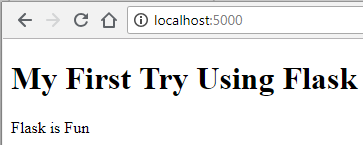Let’s add more pages
Let’s create an about.html inside the templates folder.
<!DOCTYPE html>
<html lang="en" dir="ltr">
<head>
<meta charset="utf-8">
<title>About Flask</title>
</head>
<body>
<h1>About Flask</h1>
<p>Applications that use the Flask framework include Pinterest,
LinkedIn, and the community web page for Flask itself.<p>
</body>
</html>
Let’s make a change similar to what we did before to our main.py.
from flask import Flask, render_template
app = Flask(__name__)
@app.route("/")
def home():
return render_template("home.html")
@app.route("/about)
def about():
return render_template("about.html")
if __name__ == "__main__":
app.run(debug=True)
We made three new changes:
Line 9: Change the route to"/about".
Line 10: Change the function so it is now def about():
Line 11: Change the return so that now it returns render_template("about.html").
Now see the changes: http://localhost:5000/about.

Let’s Connect Both Pages with a Navigation
To connect both pages we can have a navigation menu on the top. We can use Flask to make the process of creating a navigation menu easier. First, let’s create a template.html. This template.html will serve as a parent template. Our two child templates will inherit code from it.
<!DOCTYPE html>
<html lang="en" dir="ltr">
<head>
<meta charset="utf-8">
<title>About Flask</title>
</head>
<body>
<header>
<div class="container">
<h1 class="logo">First Web App</h1>
<strong><nav>
<ul class="menu">
<li><a href="{{ url_for('home') }}">Home</a></li>
<li><a href="{{ url_for('about') }}">About</a></li>
</ul>
<nav><strong>
</header>
{% block content %}
{% endblock %}
</body>
</html>
Line 13-14: We use the function called url_for(). It accepts the name of the function as an argument. Right now we gave it the name of the function. More information on url_for() function.
The two lines with the curly brackets will be replaced by the content of home.html and about.html. This will depend on the URL in which the user is browsing.
These changes allow the child pages (home.html and about.html) to connect to the parent (template.html). This allows us to not have to copy the code for the navigation menu in the about.html and home.html.
Content of about.html:
<!DOCTYPE html>
<html lang="en" dir="ltr">
<head>
<meta charset="utf-8">
<title>About Flask</title>
</head>
<body>
{% extends "template.html" %}
{% block content %}
<h1>About Flask</h1>
<p>Applications that use the Flask framework include Pinterest,
LinkedIn, and the community web page for Flask itself.<p>
{% endblock %}
</body>
</html>
Content of home.html:
<!DOCTYPE html>
<html lang="en" dir="ltr">
<head>
<meta charset="utf-8">
<title>About Flask</title>
</head>
<body>
{% extends "template.html" %}
{% block content %}
<h1>My First Try Using Flask</h1>
<p>Flask is Fun<p>
{% endblock %}
</body>
</html>
Let’s try adding some CSS.
Adding CSS to Our Website
In the same way as we created a folder called templates to store all our HTML templates, we need a folder called static. In static, we will store our CSS, JavaScript, images, and other necessary files. That is why it is important that you should create a CSS folder to store your stylesheets. After you do this, your project folder should look like this:
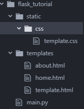Linking our CSS with our HTML file
Our template.html is the one that links all pages. We can insert the code here and it will be applicable to all child pages.
<!DOCTYPE html>
<html lang="en" dir="ltr">
<head>
<meta charset="utf-8">
<title>About Flask</title>
<link rel="stylesheet" href="{{ url_for('static', filename='css/template.css') }}">
</head>
<body>
<header>
<div class="container">
<h1 class="logo">First Web App</h1>
<strong><nav>
<ul class="menu">
<li><a href="{{ url_for('home') }}">Home</a></li>
<li><a href="{{ url_for('about') }}">About</a></li>
</ul>
<nav><strong>
</header>
{% block content %}
{% endblock %}
</body>
</html>
Line 7: Here we are giving the path to where the template.css is located.
Now see the changes: http://localhost:5000/about.
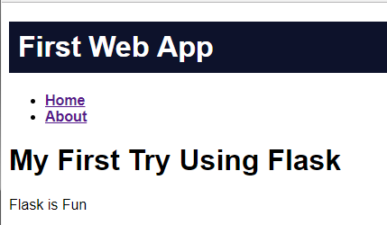Virtual Environment
Why use virtualenv
Now that you are familiar with using Flask, you may start using it in your future projects. One thing to always do is use virtualenv. You may use Python for others projects besides web-development.
Your projects might have different versions of Python installed, different dependencies and packages.
We use virtualenv to create an isolated environment for your Python project. This means that each project can have its own dependencies regardless of what dependencies every other project has.
Getting started with virtualenv
First, run this command on your command prompt or terminal:
pip install virtualenv
Second, do the following:
virtualenv “name of virtual environment”
Here you can give a name to the environment. I usually give it a name of virtual. It will look like this:
virtualenv virtual.,After setting up virtual environment, check your project folder. It should look like this. The virtual environment needs to be created in the same directory where your app files are located.
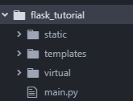Activating the virtual environment
Now go to your terminal or command prompt. Go to the directory that contains the file called activate. The file called activate is found inside a folder called Scripts for Windows and bin for OS X and Linux.
For OS X and Linux Environment:
$ name of virtual environmnet/bin/activate
For Windows Environment:
name of virtual environment\Scripts\activate
Since I am using a Windows machine, when I activate the environment it will look like this:
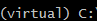The next step is to install flask on your virtual environment so that we can run the application inside our environment. Run the command:
pip install flask
Run your application and go to http://localhost:5000/
We finally made our web application. Now we want to show the whole world our project.
(More information on virtualenv can be found in the following guides on and Flask Official Documentation)
Cloud Services
Deploy Your Web Application to the Cloud
To deploy our web application to the cloud, we will use Google App Engine (Standard Environment). This is an example of a Platform as a Service (PaaS).
PaaS refers to the delivery of operating systems and associated services over the internet without downloads or installation. The approach lets customers create and deploy applications without having to invest in the underlying infrastructure (More info on PaaS check out TechTarget).
Google App Engine is a platform as a service offering that allows developers and businesses to build and run applications using Google’s advanced infrastructure — TechOpedia.
Before you Start:
You will need a Google Account. Once you create an account, go to the Google Cloud Platform Console and create a new project. Also, you need to install the Google Cloud SDK.
At the end of this tutorial your project structure will look like this.
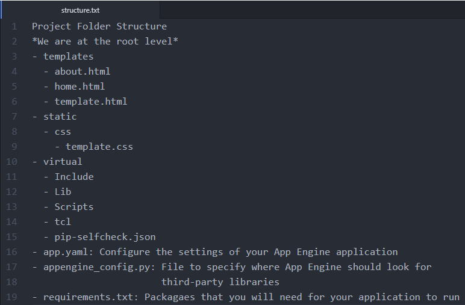We will need to create three new files: app.yaml, appengine_config.py, and requirements.txt.
Content of app.yaml:
runtime: python27
api_version: 1
threadsafe: true
handlers:
- url: /static
static_dir: static
- url: /.*
script: main.app
libraries:
- name: ssl
version: latest
If you were to check Google’s Tutorial in the part where they talk about content of the app.yaml, it does not include the section where I wrote about libraries.
When I first attempted to deploy my simple web app, my deployment never worked. After many attempts, I learned that we needed to include the SSL library.
The SSL Library allows us to create secure connections between the client and server. Every time the user goes to our website they will need to connect to a server run by Google App Engine. We need to create a secure connection for this. (I recently learned this, so if you have a suggestions for this let me know!)
Content of appengine_config.py:
from google.appengine.ext import vendor
# Add any libraries installed in the "lib" folder.
vendor.add('lib')
Content of requirements.txt:
Flask
Werkzeug
Now inside our virtual environment (make sure your virtualenv is activated), we are going to install the new dependencies we have in requirements.txt. Run this command:
pip install -t lib -r requirements.txt
-t lib: This flag copies the libraries into a lib folder, which uploads to App Engine during deployment.
-r requirements.txt: Tells pip to install everything from requirements.txt.
Deploying the Application
To deploy the application to Google App Engine, use this command.
gcloud app deploy
I usually include — project [ID of Project]
This specifies what project you are deploying. The command will look like this:
gcloud app deploy --project [ID of Project]
The Application
Now check the URL of your application. The application will be store in the following way:
"your project id".appspot.com
My application is here: http://sal-flask-tutorial.appspot.com